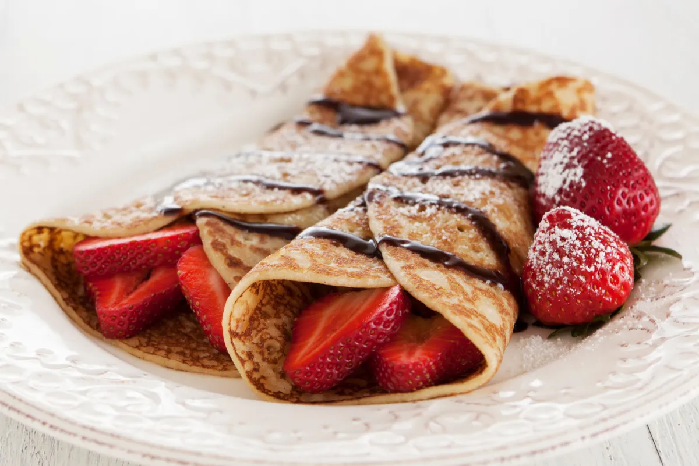

Crepes

Description
Indulge in the French classic, crepes - a thin, delectable pancake that can be filled with endless sweet or
savory options.
A versatile and impressive dish that will delight any food lover!
Ingredients
- 1 cup all-purpose flour
- 1 cup milk
- 1 egg
- 1 pinch salt
Steps
- In a medium-size mixing bowl, whisk together the flour, milk, egg and salt.
- Heat a large frying pan or wok over medium high heat. When the pan is hot add a teaspoon of butter and
lightly coat the surface of the pan with the melted butter.
- Pour one quarter cup of the batter into the pan and tilt the pan with a circular motion so that the batter
coats the surface in a smooth and even layer.
- After two minutes, lift up an edge of the crepe with a spatula to see if it is browning.
When the underside has begun to brown, flip the crepe and cook the other side until it is also brown; about
2 minutes.
Back to Recipes